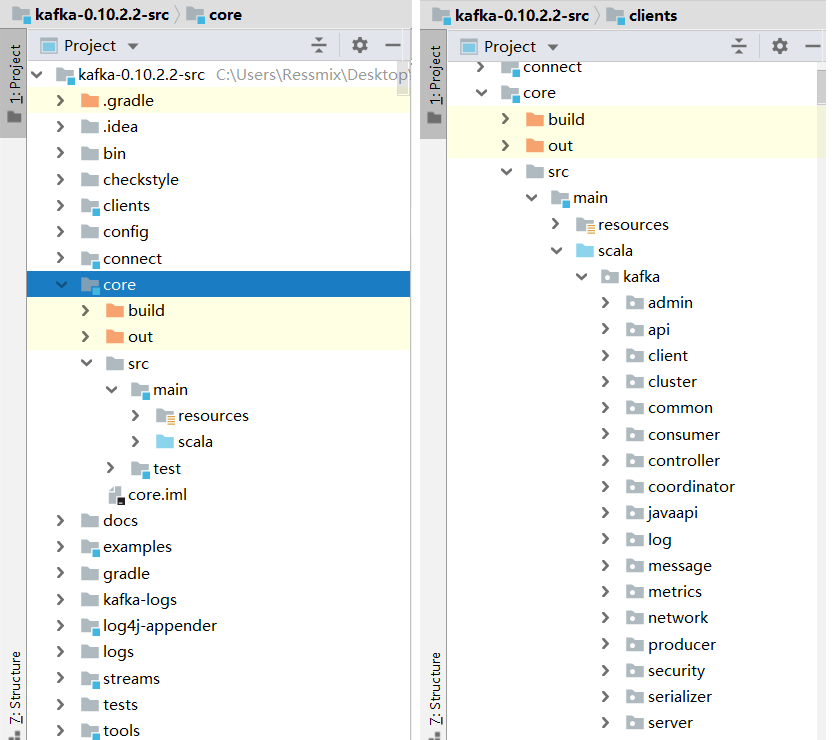
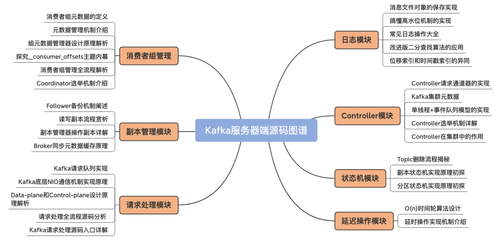
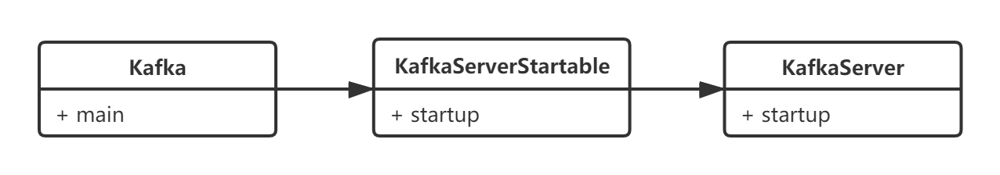

Kafka源码分析（十三）——Broker：整体架构
Kafka服务端（也就是Broker）的源码是采用Scala和Java编写的，Scala是一门JVM语言，Kafka用它写服务端源码主要是利用它的一些语法糖，简化编码，所以基本不影响我们阅读Broker的源码。
服务端源码主要存放在core模块中：

我们分析Kafka服务端的源码，需要重点关注以下四个方面，后续我也会分四个部分逐一讲解，本章我先从整体上讲解Broker的架构：
- 网络通信；
- 磁盘读写；
- 副本同步；
- 集群管理。

一、整体架构
Kafka Broker的整体架构可以用下面这张图表示：

可以看到，Broker的各个模块的职责和架构分层非常清晰：
- Network Layer（网络层）：负责与客户端建立连接并处理底层网络通讯的细节；
- API Layer（API层）：负责具体请求的处理和转发，并其它模块进行交互；
- Log Subsystem（日志子系统）：负责消息的持久化存储；
- Replication SubSystem（副本子系统）：负责副本管理，包含消息同步、副本控制等等。
二、启动类

1.1 启动
Kafka类中的main方法就是Broker启动的入口：
object Kafka extends Logging {
def main(args: Array[String]): Unit = {
try {
// 读取配置
val serverProps = getPropsFromArgs(args)
val kafkaServerStartable = KafkaServerStartable.fromProps(serverProps)
// 增加一个shutdown钩子
Runtime.getRuntime().addShutdownHook(new Thread() {
override def run() = {
kafkaServerStartable.shutdown
}
})
// 启动线程
kafkaServerStartable.startup
// 等待关闭
kafkaServerStartable.awaitShutdown
}
catch {
case e: Throwable =>
fatal(e)
System.exit(1)
}
System.exit(0)
}
}
内部调用KafkaServerStartable的startup方法，最终调用KafkaServer.startup启动工程线程：
class KafkaServerStartable(val serverConfig: KafkaConfig, reporters: Seq[KafkaMetricsReporter]) extends Logging {
private val server = new KafkaServer(serverConfig, kafkaMetricsReporters = reporters)
def this(serverConfig: KafkaConfig) = this(serverConfig, Seq.empty)
def startup() {
try {
// 启动Kafka Server
server.startup()
}
//...
}
1.2 初始化
初始化流程是在KafkaServer.startup()中完成的，整个流程还是非常清晰，就是创建并启动Kafka Server端的各类核心组件：
// KafkaServer.scala
def startup() {
try {
// 1.如果Kafka Sever正在停止中，禁止启动
if(isShuttingDown.get)
throw new IllegalStateException("Kafka server is still shutting down, cannot re-start!")
// 2.如果Kafka Sever已经启动成功，直接返回
if(startupComplete.get)
return
// 3.设置标志，表示正在启动
val canStartup = isStartingUp.compareAndSet(false, true)
if (canStartup) {
// 4.设置Broker状态
brokerState.newState(Starting)
// 5.启动一个调度线程池，通过参数`background.threads`设置线程数
kafkaScheduler.startup()
// 6.初始化Zookeeper连接
zkUtils = initZk()
// 7.获取或创建ClusterId，与Broker集群控制管理有关
_clusterId = getOrGenerateClusterId(zkUtils)
info(s"Cluster ID = $clusterId")
// 8.设置Broker ID
config.brokerId = getBrokerId
this.logIdent = "[Kafka Server " + config.brokerId + "], "
// 9.启动日志管理器
logManager = createLogManager(zkUtils.zkClient, brokerState)
logManager.startup()
// 10.启动Server端的网络通讯组件
metadataCache = new MetadataCache(config.brokerId)
credentialProvider = new CredentialProvider(config.saslEnabledMechanisms)
socketServer = new SocketServer(config, metrics, time, credentialProvider)
socketServer.startup()
// 11.启动副本同步组件
replicaManager = new ReplicaManager(config, metrics, time, zkUtils, kafkaScheduler, logManager,
isShuttingDown, quotaManagers.follower)
replicaManager.startup()
// 12.启动KafkaController
kafkaController = new KafkaController(config, zkUtils, brokerState, time, metrics,
threadNamePrefix)
kafkaController.startup()
// 13.启动GroupCoordinator
groupCoordinator = GroupCoordinator(config, zkUtils, replicaManager, Time.SYSTEM)
groupCoordinator.startup()
// 14.启动请求处理线程池
apis = new KafkaApis(socketServer.requestChannel, replicaManager, adminManager,
groupCoordinator,kafkaController, zkUtils, config.brokerId,
config, metadataCache, metrics, authorizer, quotaManagers,
clusterId, time)
requestHandlerPool = new KafkaRequestHandlerPool(config.brokerId, socketServer.requestChannel,
apis, time, config.numIoThreads)
// 15.启动心跳检测
val listeners = config.advertisedListeners.map { endpoint =>
if (endpoint.port == 0)
endpoint.copy(port = socketServer.boundPort(endpoint.listenerName))
else
endpoint
}
kafkaHealthcheck = new KafkaHealthcheck(config.brokerId, listeners, zkUtils, config.rack,
config.interBrokerProtocolVersion)
kafkaHealthcheck.startup()
//...
brokerState.newState(RunningAsBroker)
shutdownLatch = new CountDownLatch(1)
startupComplete.set(true)
isStartingUp.set(false)
AppInfoParser.registerAppInfo(jmxPrefix, config.brokerId.toString)
info("started")
}
}
catch {
case e: Throwable =>
fatal("Fatal error during KafkaServer startup. Prepare to shutdown", e)
isStartingUp.set(false)
shutdown()
throw e
}
}
三、总结
本章，我对Broker的整体架构以及启动流程进行了讲解，Kafka Broker从整体上分为四个模块：Network Layer（网络层）、API Layer（API层）、Log Subsystem（日志子系统）、Replication SubSystem（副本子系统）。
下一章开始，我将先对Network Layer（网络层）的底层源码进行分析。